|
Shantanu Nitin Ghodgaonkar
I’m a roboticist passionate about exploring the fascinating intersection
of optimal control, reinforcement learning, computer vision, and legged robots. As a Master’s
student in Mechatronics, Robotics, and Automation Engineering at NYU Tandon, I love diving into
complex challenges. Whether it’s designing algorithms for multi-DOF robots, developing vision-based
model predictive control systems, or optimizing robot
trajectories. With hands-on experience in
tools like ROS, PyTorch, and OpenCV, I’m driven by the opportunity to bridge theory and real-world
applications, pushing the boundaries of what autonomous systems can achieve.
My current flagship project is a fully autonomous Hexapod Robot that integrates SLAM and MPC to
navigate dynamic terrains using sensor fusion, real-time path planning, and adaptive control
algorithms.
Email /
CV /
LinkedIn /
GitHub
|
|
Projects
My projects cover topics like Model Predictive Control, Proximal Policy Optimization, Advanced
Mechatronics, Internet Of Things, Computer Vision and Embedded Systems.
|
|
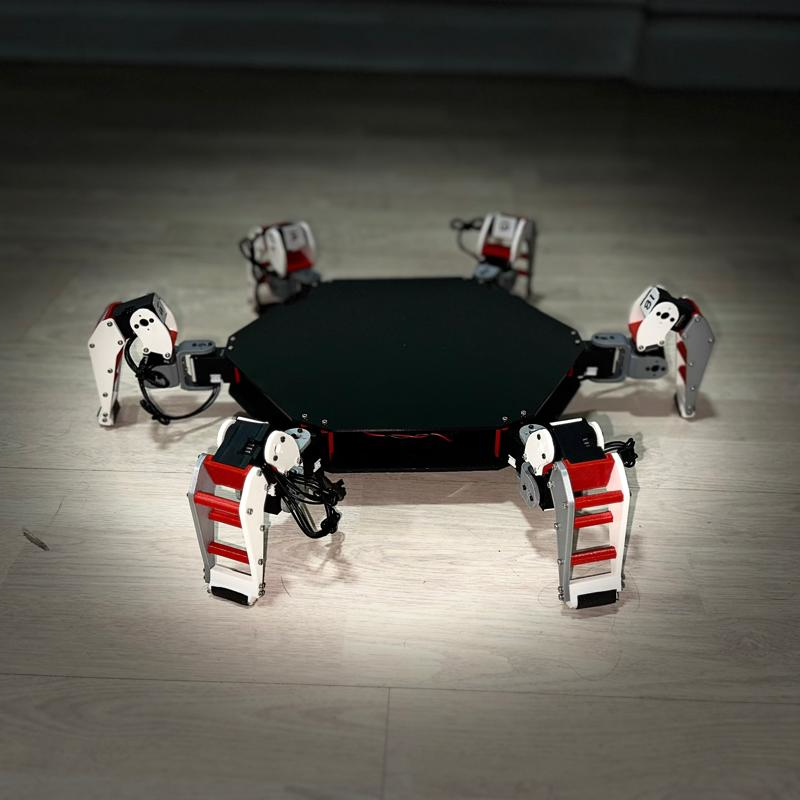
|
Hexapod Robot: Scalable Trajectory Optimization and Motion Planning
Master’s Project, 2024 - Present
GitHub Repository
This project involves developing scalable trajectory optimization and motion planning algorithms for
a 7-DOF hexapod robot, enhancing gait stability and interaction with complex environments.
|
|
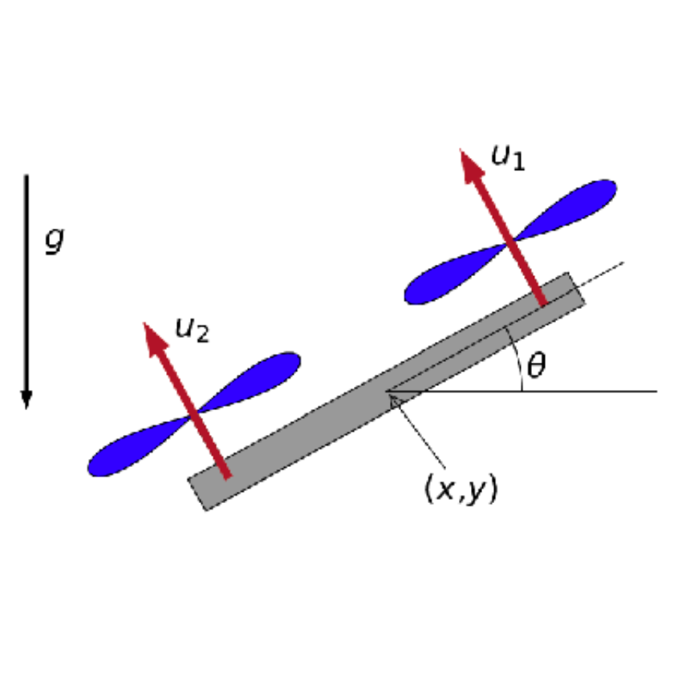
|
Quadrotor Navigation with Reinforcement Learning
Course Project, Fall 2024
GitHub
Repository
This project aims to control a 2D quadrotor to reach a target while avoiding obstacles using
reinforcement learning. A custom environment is created with the stable_baselines3 library, and an
RL agent is trained using the Proximal Policy Optimization (PPO) algorithm to navigate efficiently
and safely in a simulated environment.
|
|
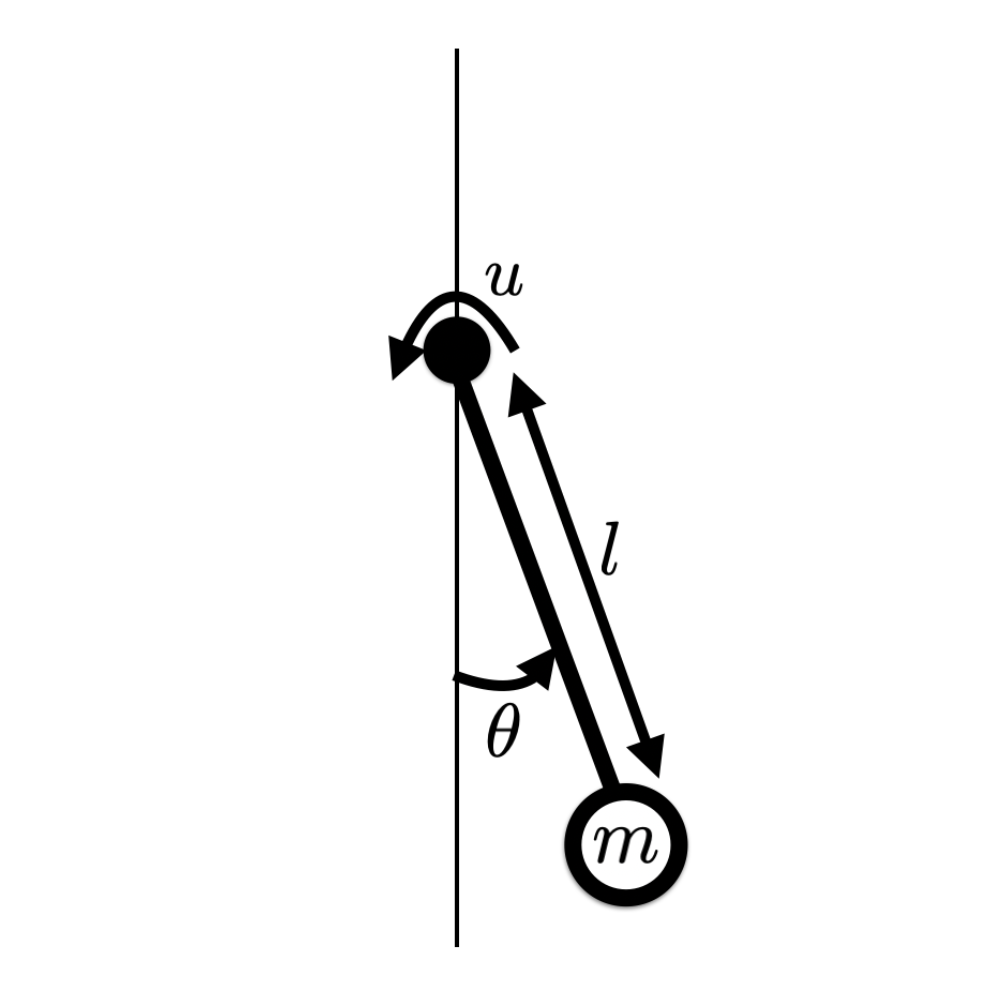
|
Q-Learning with Neural Networks for Inverted Pendulum
Course Project, Fall 2024
GitHub
Repository
This project implements Q-learning using a neural network to solve the inverted pendulum problem.
The objective is to train a policy that minimizes a defined cost function using PyTorch, with
Q-values approximated by a neural network. The project includes the algorithm implementation,
analysis of performance through cost and value function plots, and a demonstration video of the
pendulum's behavior.
|
|
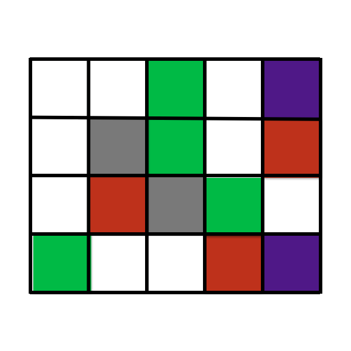
|
Grid-World: Value and Policy Iteration for Optimal Control
Course Project, Fall 2024
GitHub
Repository
This project explores solving a grid-world problem using value iteration and policy iteration
algorithms to compute the optimal policy and value function. The project compares the computational
complexity and convergence behavior of the two methods, providing insights into their application in
real-world optimal control problems.
|
|
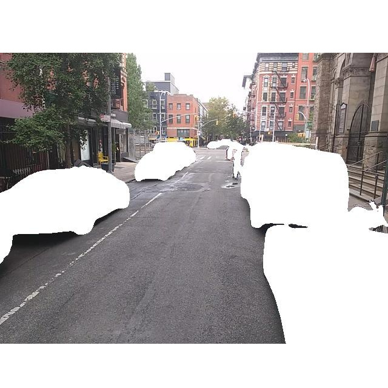
|
Skiptrace: Visual Place Recognition for Surveillance
Course Project, Fall 2024
GitHub Repository
This project implements a **Visual Place Recognition** system to match query images with a
surveillance photo database using feature-based methods. The approach leverages SIFT descriptors,
VLAD encoding, and k-means clustering to efficiently search and identify target locations from a
large dataset. The implementation provides a structured pipeline for feature extraction, descriptor
management, query processing, and visualization of retrieved images.
|
|
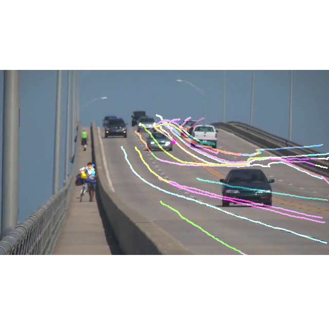
|
Object Tracking: Sparse and Dense Optical Flow
Course Project, Fall 2024
GitHub
Repository
This project involves implementing object tracking across video sequences using optical flow
algorithms. Two methods, the Lucas-Kanade Sparse Optical Flow and Farneback Dense Optical Flow, are
explored. The project demonstrates tracking entities persistently, visualizing motion fields, and
comparing the efficiency and accuracy of both methods. Detailed step-by-step explanations and
results with bounding box tracking are provided.
|
|
|
Trajectory Optimization and Model Predictive Control for 2D
Quadrotor
Course Project, Fall 2024
GitHub
Repository
This project focuses on developing a control system for a 2D quadrotor to perform a looping maneuver
using optimization-based techniques. It includes trajectory optimization via Sequential Quadratic
Programming (SQP) and extends to Model Predictive Control (MPC) for real-time adaptability and
robustness in simulated environments.
|
|
|
Implementation of SQP for Nonlinear Optimal Control
Course Project, Fall 2024
GitHub
Repository
This project demonstrates the implementation of a Sequential Quadratic Programming (SQP) solver to
solve a nonlinear optimal control problem. The problem focuses on controlling the dynamics of a
pendulum to achieve a target configuration with minimal energy and precise control, using
discretized dynamics and optimization techniques.
|
|
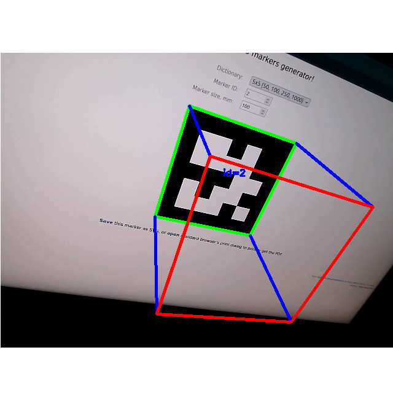
|
Tag-based Augmented Reality: AR Cube Projection on ArUco Markers
Course Project, Fall 2024
GitHub
Repository
This project demonstrates the implementation of tag-based augmented reality using ArUco markers. The
program detects tags, estimates their pose, and overlays 3D objects such as a cube on the detected
tags. It leverages OpenCV for marker detection, pose estimation, and visualization, showcasing
augmented reality results from multiple perspectives. The implementation involves the use of
intrinsic camera calibration, marker size definitions, and detailed pose transformations for
accurate AR projections.
|
|
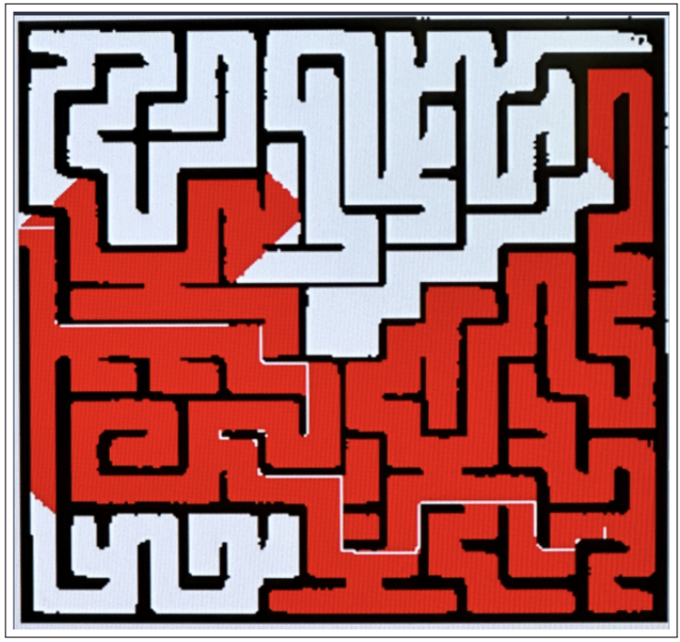
|
Maze Solving Robot
Course Project, Spring 2024
GitHub Repository
This project showcases a maze-solving robot developed using Raspberry Pi 4B and Arduino Uno
microcontrollers. By leveraging OpenCV for image processing, the robot identifies the ball's
position and maze walls, while the breadth-first search (BFS) algorithm calculates the optimal path
to the maze's exit. Servo motors controlled by the Arduino execute the navigation commands, enabling
the robot to manipulate the ball’s movement effectively. The system operates in real-time,
dynamically recalculating the ball’s path as it navigates through the maze.
|
|
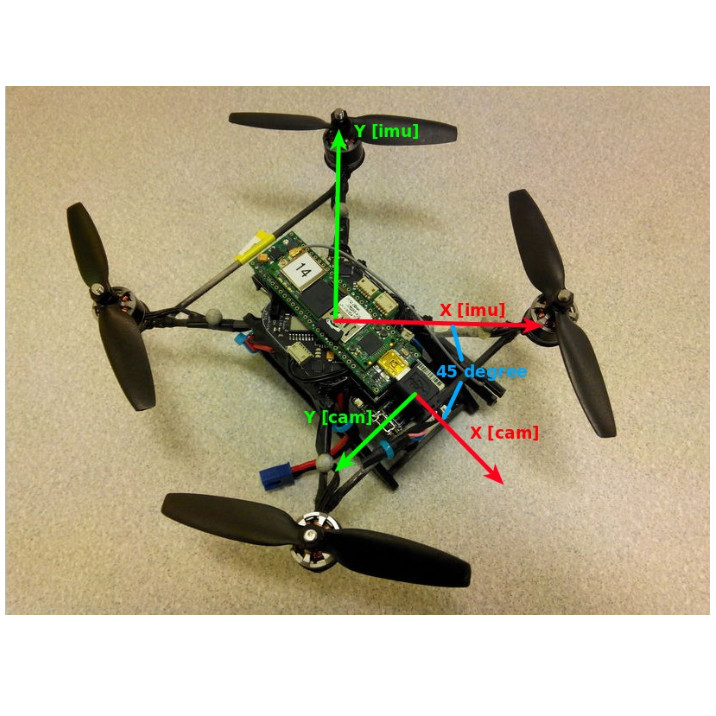
|
Vision and IMU Fusion with Unscented Kalman Filter
Course Project, Spring 2024
GitHub Repository
This project explores the use of an Unscented Kalman Filter (UKF) for sensor fusion, integrating
data from an Inertial Measurement Unit (IMU) and a vision-based system for enhanced robot state
estimation. The UKF is selected for its ability to handle nonlinearities, making it more accurate
than traditional Kalman Filters. Two scenarios are evaluated: using visual pose estimation for
position and orientation measurements and employing optical flow-derived velocity measurements.
Performance is analyzed by comparing the estimated trajectories with ground-truth sensor data,
demonstrating the effectiveness of UKF in handling nonlinear system models and limited measurements.
|
|
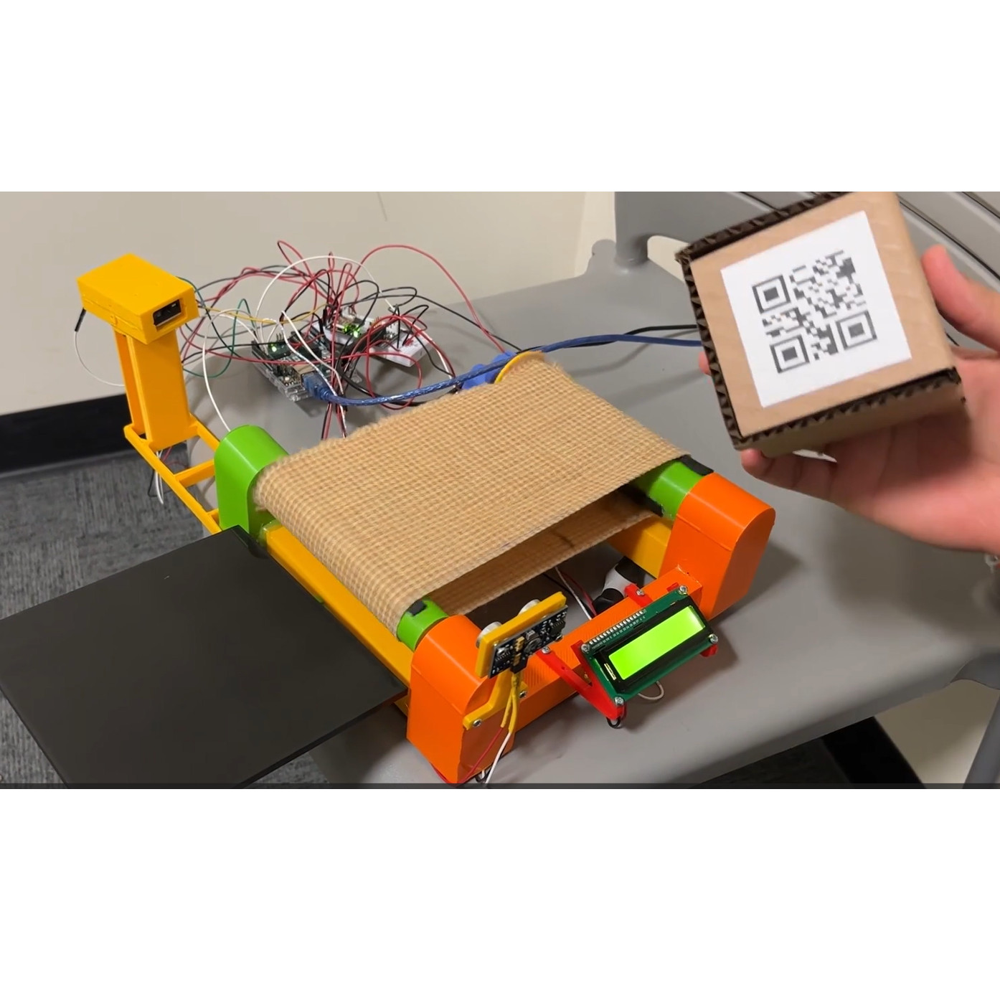
|
Automatic Package Separator
Course Project, Spring 2024
GitHub Repository
This project introduces an Automatic Package Separator system using Arduino technology to enhance
the efficiency of package handling and segregation. The system employs 1D/2D barcode scanning for
address detection, servo motors for package redirection, and an LCD module for real-time feedback.
Designed for logistics and supply chain management, this innovative solution optimizes workflows and
improves package processing accuracy.
|
|
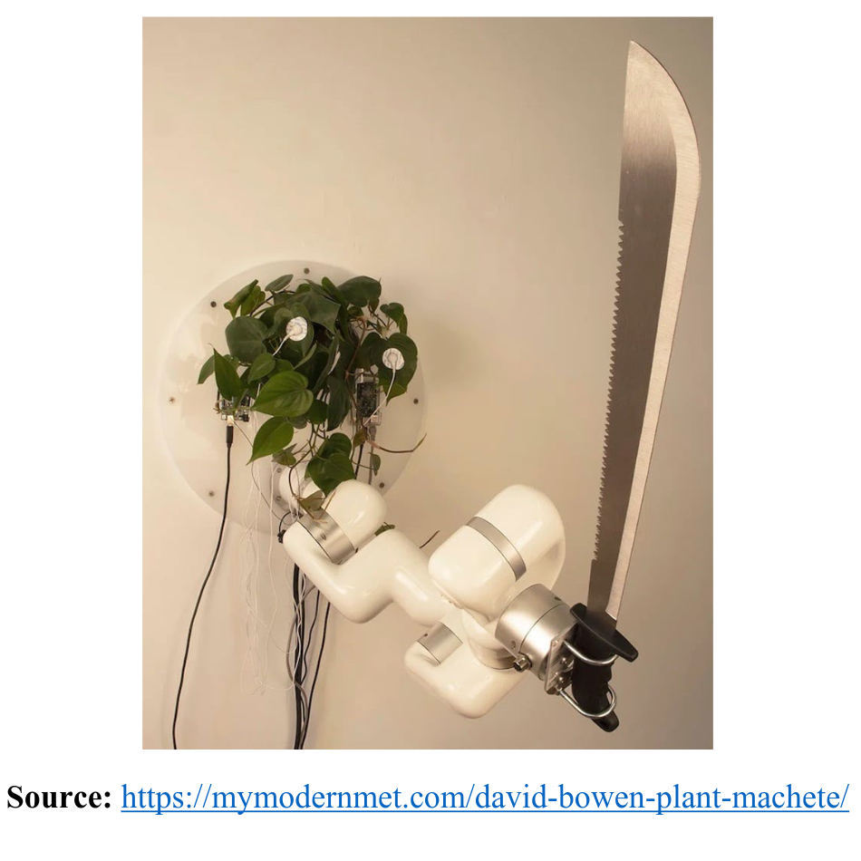
|
Robotic Kinematics and Visualization
Course Project, Fall 2023
GitHub
Repository
This project focuses on implementing robotic forward and inverse kinematics and visualizing the
results through a "connect-the-dots" stick-figure representation of a robot. The platform emphasizes
accurate computation of joint positions and end-effector configurations for complex robotic systems,
as well as error handling when desired configurations are unreachable. The logic includes
detailed functionality for forward kinematics, inverse kinematics and visualization.
|
|
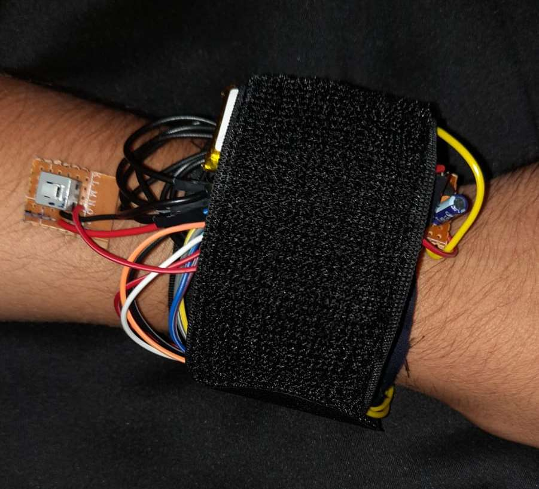
|
Wearable Physiological Monitoring System Using ClusterDuck Protocol
Bachelor's Project, 2017
GitHub Repository
This project focuses on the development of a Wearable Physiological Monitoring System that
leverages the ClusterDuck Protocol (CDP) to enable reliable communication between wearable
health monitoring devices and a base station. Designed for real-time monitoring, the system measures
key physiological parameters, such as heart rate and body temperature, and transmits the data
wirelessly using LoRa technology. The wearable device is built with an ESP32
microcontroller, ensuring low power consumption and seamless communication, even in challenging
conditions or emergencies.
|
Feel free to steal this website's source
code. Do not scrape the HTML from this page itself, as it includes analytics
tags that you do not want on your own website — use the github code instead. Also, consider
using Leonid Keselman's Jekyll fork of this page.
|
|
{kind=link}